Current default:1.0-rc4, substantially AI-assisted. See the new empty-clinic opening and actual first minute. The RC3 material below is historical. This is a release candidate; no production-readiness, commercial superiority or educational benefit is claimed.
New indoor walking clips authored and executed in Blender, distance-locked foot phase, restored task-clip weights, clear-only corner rounding and slower indoor travel. The neighborhood opening now brings three neighbors together; the player opens a room and Sage walks over. This actual capture covers game seconds0–60 with planning pauses, at1×. Menus are summarized in captions, not filmed; no audio.
Download historical RC3 opening MP4 · Actual opening action log · Model change, animation checks and limits
Seed431:4arrivals,1completed,0departed,3unfinished. This recording's actions and tracked visit replay exactly underRC3. A separate model comparison measured first-three waiting58s without expansion versus27s with it; both completed1visit by60s. Enjoyment remains unvalidated.
RC3 browser observations and limits · Executed RC3 checks
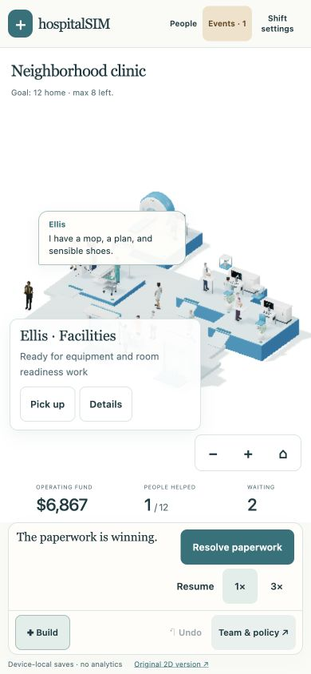
6min26sec of historical actual browser canvas capture: simulation0–480, mostly3× with planning pauses. HTML menu actions appear as captions; audio is not recorded.27arrivals =13completed +5departed +9unfinished. Recruitment, construction, intake choice, facilities response, a free lounge and scanner upgrade were performed through real controls. The tracked consultation/imaging/care visit and final counts replay exactly in source.
Download MP4 · Recorded actions/visit JSON · Source replay verification
This historical recording predates RC3 walking speed and arrival changes. Its13/5/9outcomes are verified against the retainedRC1source at portfolio commit5265c8b; replaying its actions underRC3 is a different experiment and no longer produces identical counts. The still comparison below isRC2; it compares the unchanged equipment and character geometry, not the new walk animation. This disclosure avoids presenting a different render pass as identical footage.
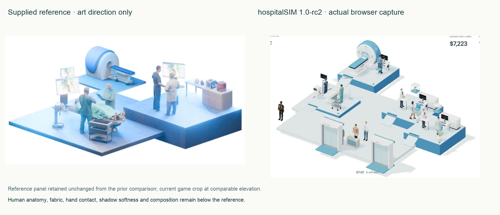
The reference remains stronger in human anatomy, fabric folds, believable task contact, shadow softness and composition. Game circulation/doors add visual space. Characters, cloth and tool interaction remain simplified. The reference panel is retained from the prior requested comparison; it is not a game asset.
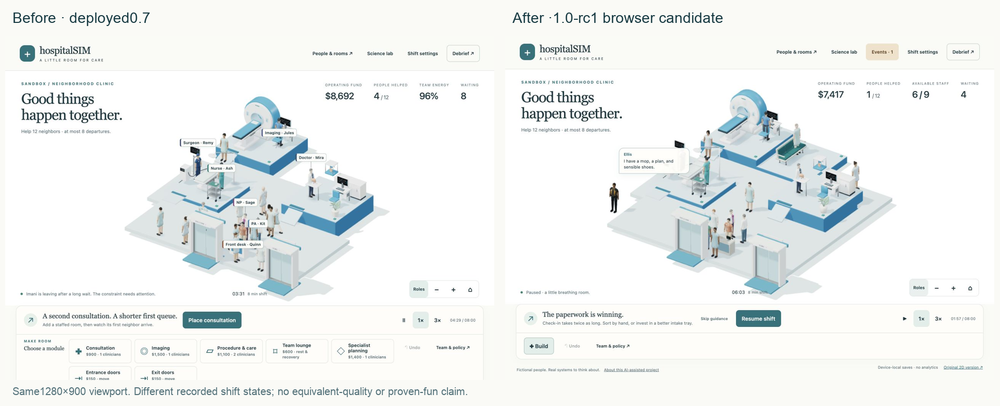
RC2 removes default floating names and queue tags. Tap one character for context; drag to lift. Building offers three named sites and restores play after placement. Empty rooms require explicit staffing. Actual narrow checks confirm these changes; enjoyment remains unvalidated.
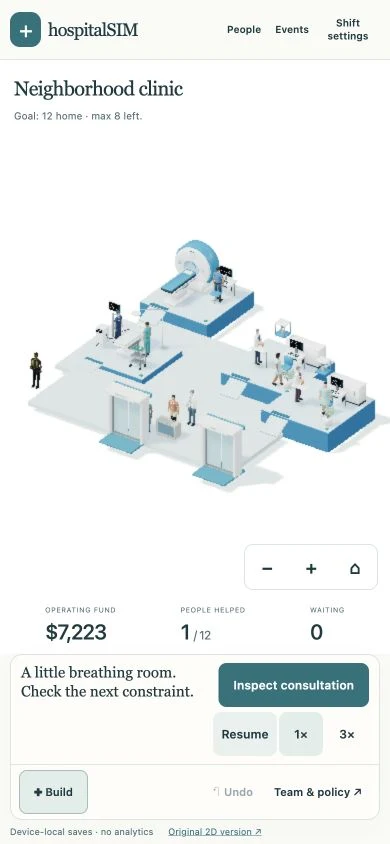
Confirmed1280×900and390×844in desktop Chromium on Apple M2 / ANGLE Metal. All nine final narrow role targets were separate122×44pxbuttons; each lifted its exact named colleague and cancelled. These are browser checks, not actual iPhone Safari, native touch, VoiceOver or accessibility conformance evidence.
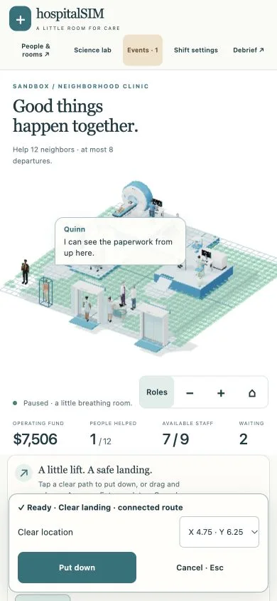
Measured role rectangles · Workstation carry observation · Measured asset sizes · Executed test results
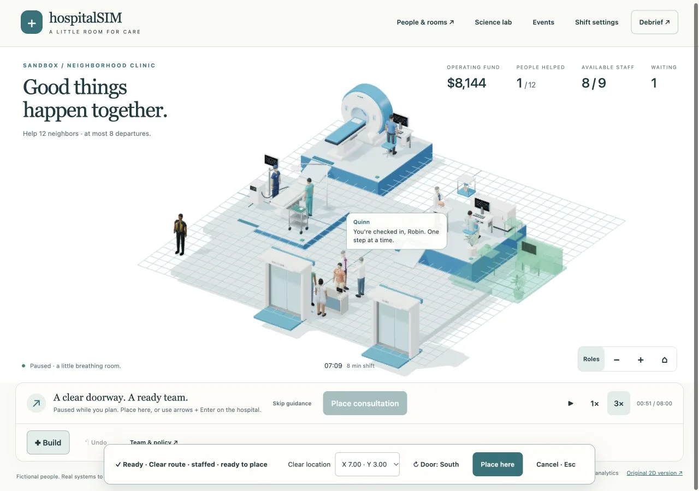
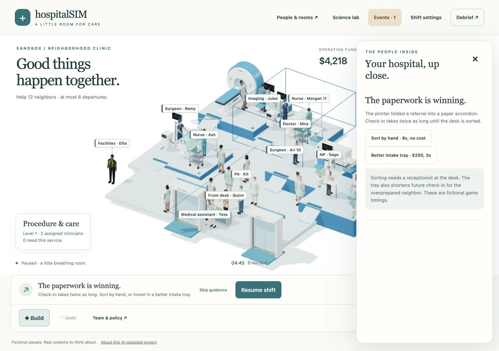
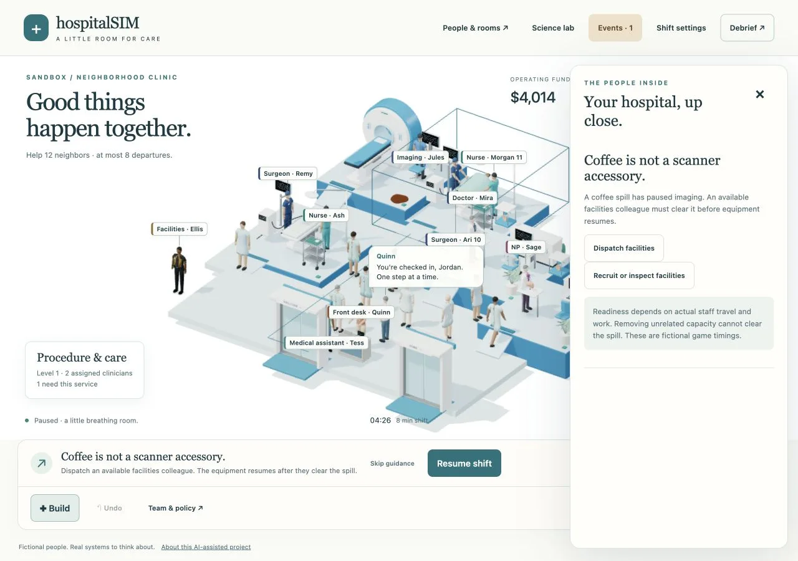
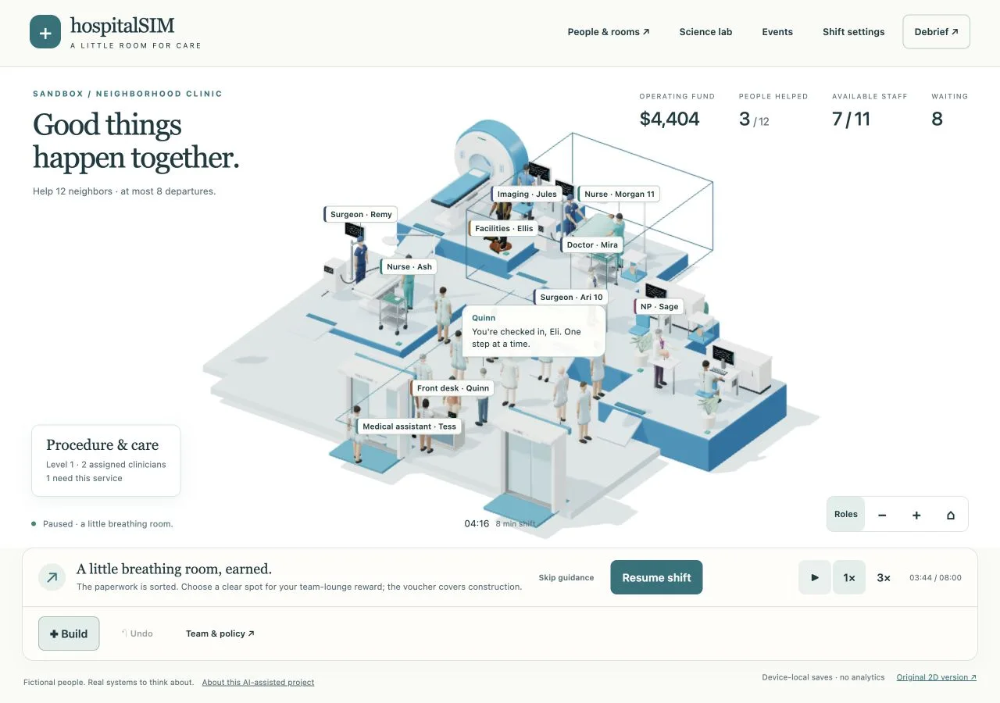
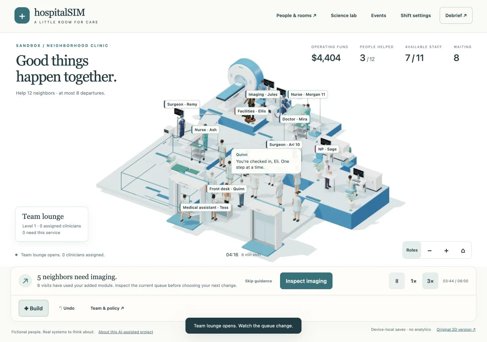
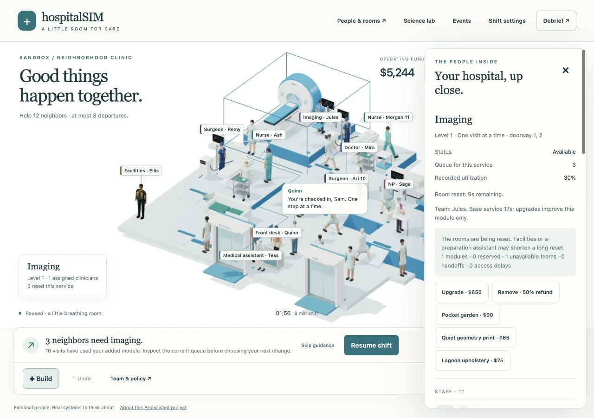
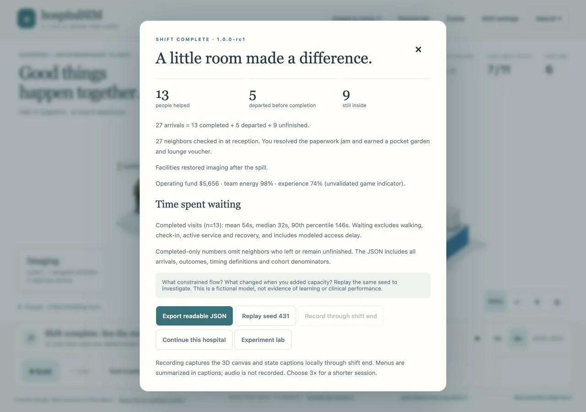
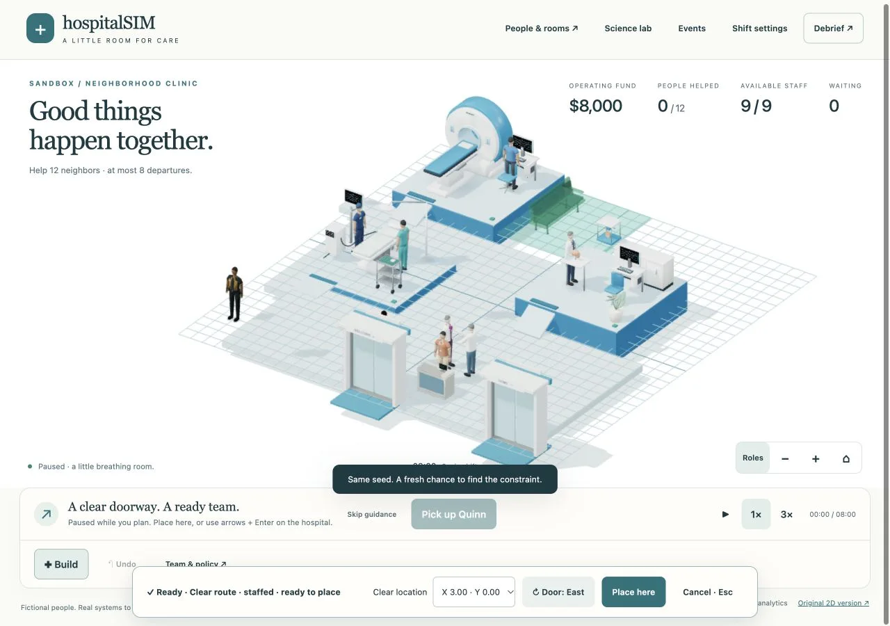
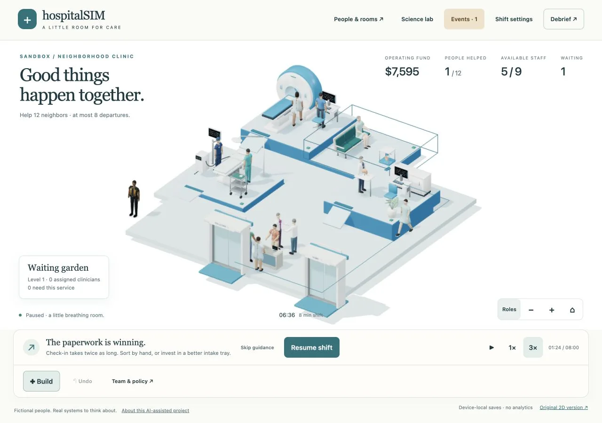
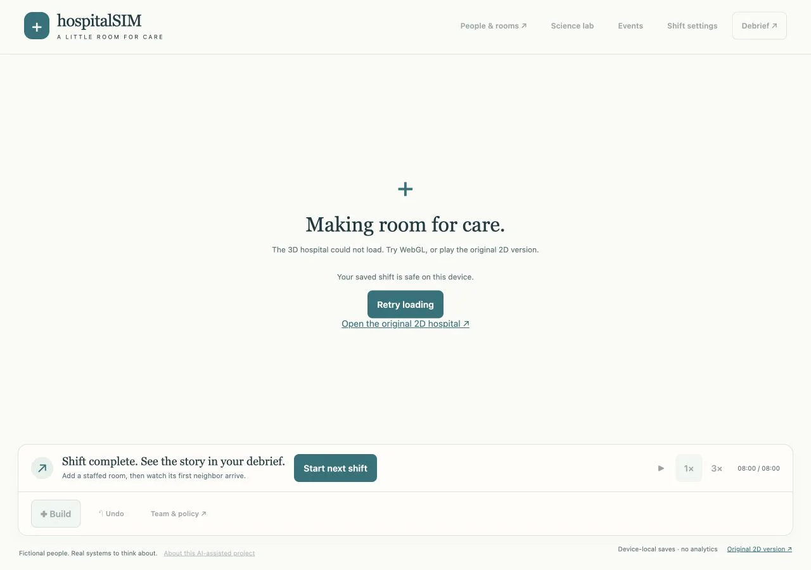
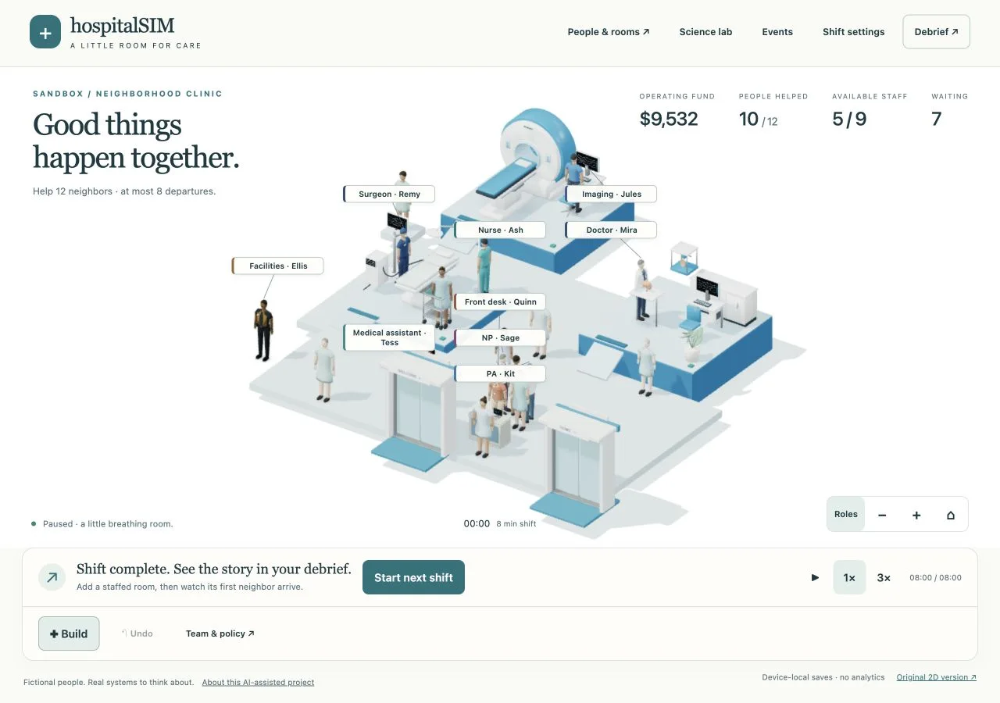
Fun, repeat-play interest and learning remain unvalidated. No clinician review, learner sample, collaboration or admissions outcome is invented. Actual iPhone lag remains a required owner retest.